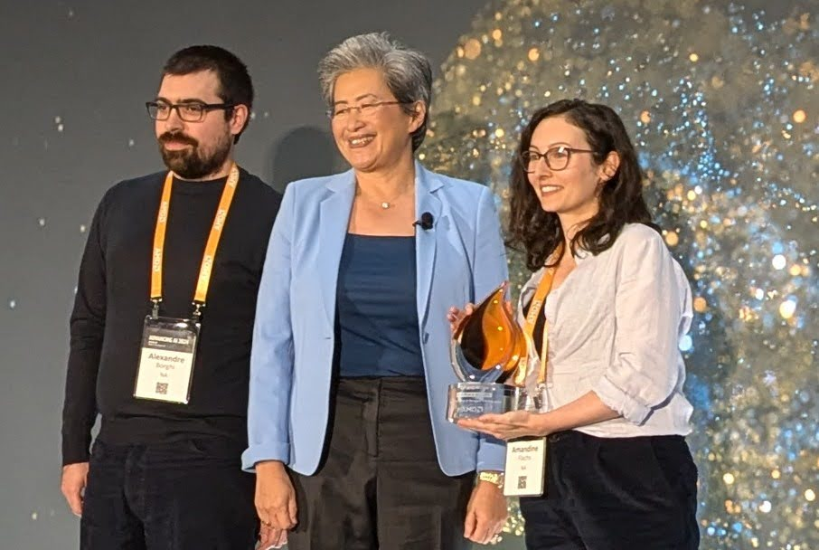

About me
I am a scientist and engineer, currently an MTS at Microsoft AI Superintelligence, where I work on RL and VLMs. The first research lab I joined was the LRDE in 2005. After graduating from EPITA in 2007, I completed a MSc in AI and Decision from Paris VI in 2008 and a PhD in Computer Science from Paris XI in 2011. I explored compressed sensing, convex optimization, combinatorial optimization and parallel algorithms. Since transitioning into ML in 2017 I have been working as Research Engineer/Scientist across various ML research teams and companies including SambaNova, Graphcore, Imagination Technologies and AstraZeneca.
Some recent (and not so recent) works
- Stability of off-policy RLVR algorithms and accelerating on-policy RLVR
- Preserving answer diversity in supervised finetuning
- LLMs to solver AIME-style problems, informal proof generation and formalization in Lean
- New algorithms to train speculators for speculative decoding
- Long-horizon multimodal RL
- Sample efficient RL and scaling, in particular model-based RL and planning, and scalable model-free RL
- Architectures and algorithms to train CNNs and ViTs for object detection, 6D pose and depth estimation
- Efficient neural network architectures, including on AI accelerators
- GPU kernels for computer graphics, computer vision and CNN inference, on PowerVR, AMD, Intel and NVIDIA GPUs
Competitions

In my spare time, before the era of coding agents, I used to participate in ML competitions and AI hackathons, most of the time with the incredible Amandine Flachs. We've won 1st place at the AMD Pervasive AI 2024 with a 7B LLM trained for mathematics on AMD GPUs, and won the OpenAI Open Model Hackathon with a Dota2 bot using gpt-oss in 2025. We've also placed in the top 3 in several other competitions organized by ARM and IBM, with agentic systems or our own local models. Before that, I won 3rd place in the OpenAI Retro Contest (a meta-RL competition) in 2018, which allowed me to familiarize myself with state-of-the-art deep RL methods.